Belleville 2007, rencontre indoor

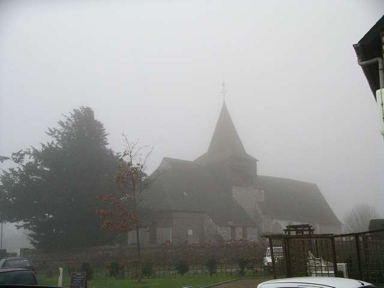
Belleville est un village près de Dieppe. Il y a une jolie église, un peu perdue dans le brouillard normand, mais le samedi ça passera, il fera beau !

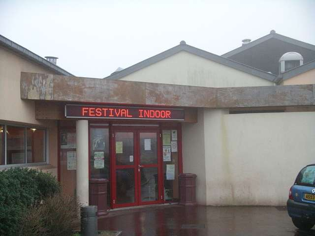
Mais avec les retombées de la centrale nucléaire de Penly, ils ont pu s'offrir un centre sportif enviable... .

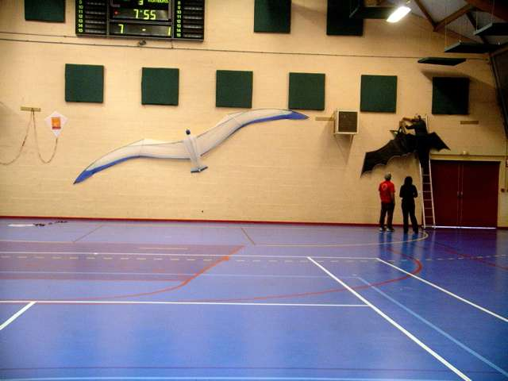
J'arrive vendredi après-midi, on vole un peu, mais surtout on commence à décorer la salle... Megoel remplit bien son panneau...

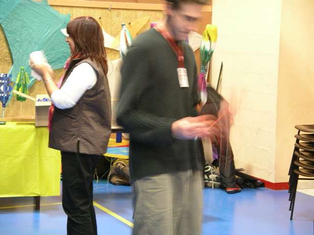
A part les cervolistes, il y a des greffons habituels, comme des baladins jongleurs : jonglage, équilibres, yoyos, balles à ficelles, etc. Pour une fois, ce ne sont pas Jim et son acolyte, mais d'autres aussi sympas.

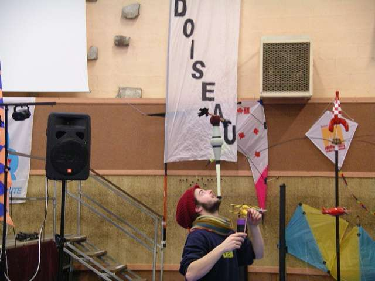
Lui aime bien les équilibres. Pendant le week-end, il s'est mis à l'assiette qui tourne en haut d'une baguette. Il en est encore au plastique, mais il va bientôt passer à la porcelaine....

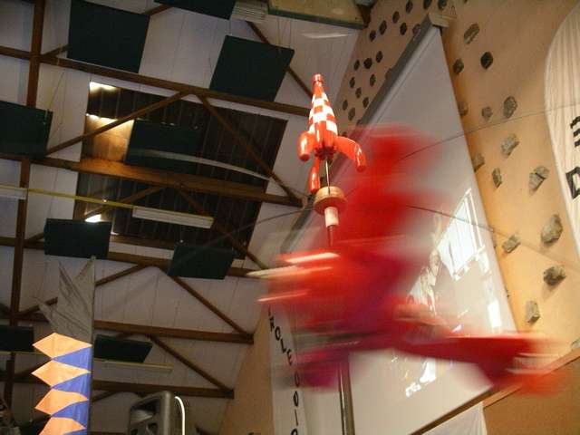
Jean-Claude est venu aussi avec ses bouteilles découpées transformées en tout ce que vous voulez ; fleurs, avions, moulinets, insectes, etc. Sa dernière création : la fusée de Tintin...

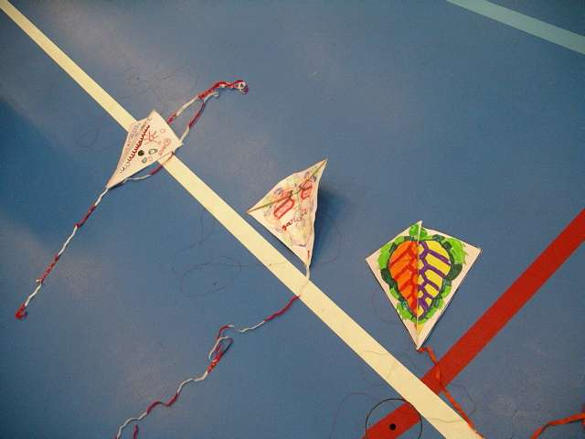
Il y a aussi, bien sûr, un atelier de cerfs-volants pour enfants, sur le modèle de Eric : le renfort longi est juste un pli collé, le renfort transversal un bambou courbé au briquet, ou une paille de bistro scotchée (suivant les modèles) ! (il y a même des chats, Emmanuel...).

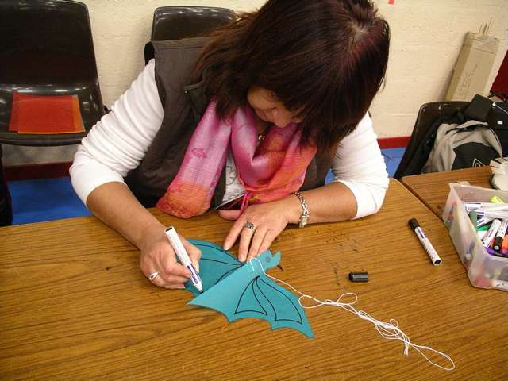
Yvette peaufine le dessin des CVs à paille..

Et toute la classe s'élance d'un fronton à l'autre, mais ça se transformera ensuite rapidement en ronde inextricable ! Voyez la ruée (2,8Mo) et merci de me signaler les problèmes de lecture...

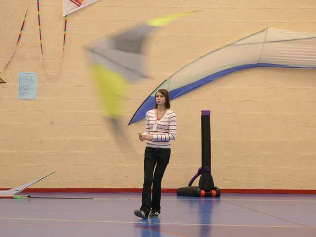
Il y a aussi des cervolistes étrangers comme 2 charmantes petites Allemandes qui se débrouillent bien, comme le papa, et qui lanceront une invitation pour le festival de Karpen (voir Eric ?)... Leur démo est très fluide, sans tricks extraordinaires mais très propre, sans accrocs.

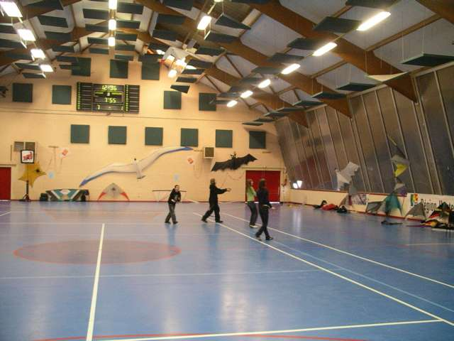
Elles se mettent avec les jeunes Max français pour improviser un team à quatre, intéressant et pas facile en indoor !

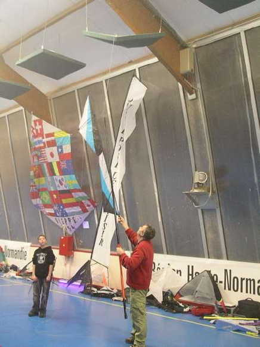
Ca a dû troubler le plus jeune Max qui trouve moyen de s'accrocher avec son révo à une chaîne qui pend et que tout le monde a cognée 10 fois dans la journée... Impossible de décrocher en tirant, mais avec une table, une chaise et un grand, ça finira par se défaire...

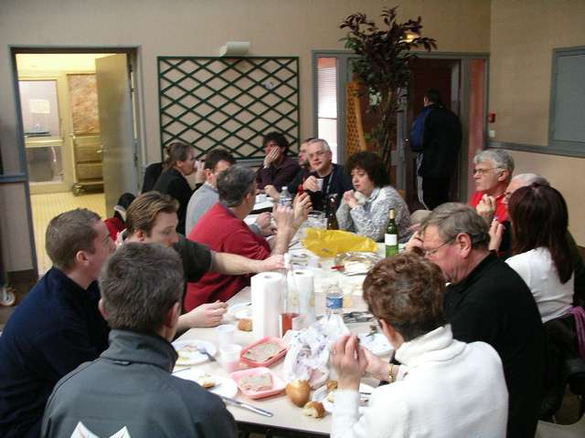
Samedi midi, repas en commun où chacun apporte ses provisions, mais il y en a qui en apportent tellement plus que c'est comme si le repas était fourni !

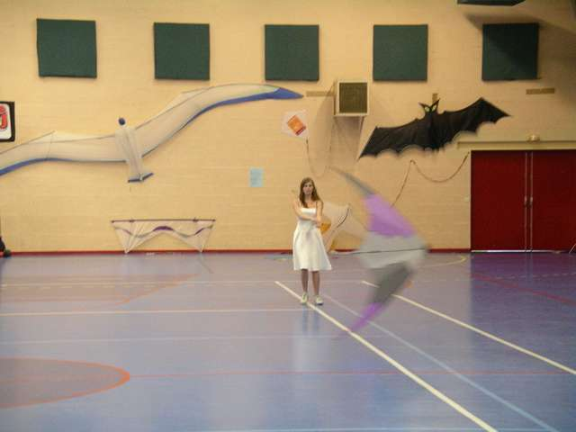
L'après-midi, les démos repartent. Les Allemandes sortent un show à deux alternées en tenues blanche et noire. Très joli. La robe blanche est très sage et BCBG...

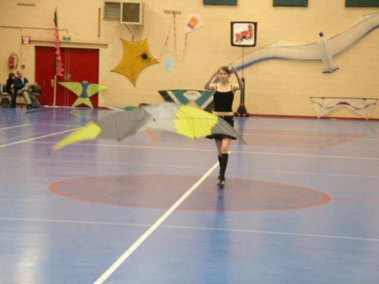
La tenue noire n'est pas mal non plus et plus délurée ! D'autant qu'au fil du show, le pull remonte et la jupe descend, évidemment ! Temps que ça s'arrête !

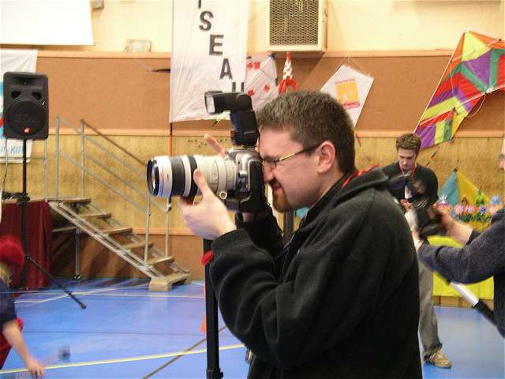
Les photographes n'en perdent pas une miette ! Leurs photos sont bien meilleures que les miennes, mais mon appareil tient dans ma poche et je l'ai toujours sur moi...

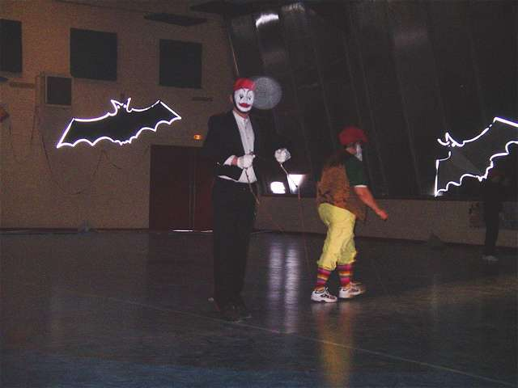
Michel Chantren place toujours avec succès son show de robot avec la participation d'Astrid !

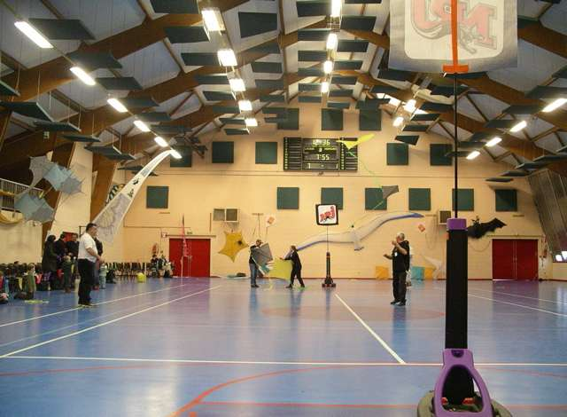
On reprend aussi le combat de combattants où il faut arracher la queue des CVs adverses ! Les règles sont très longues à exposer, mais le public s'en fout et déserte avant la fin de l'exposé, il est venu pour voir voler...

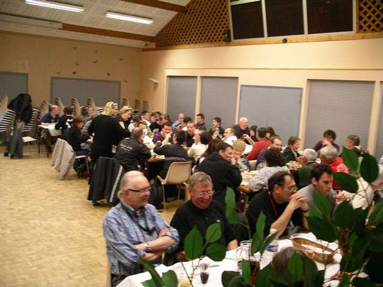
Samedi soir. Après l'ensemble Show de 18 h, entr'acte. Les cervolistes vont dîner dans la magnifique salle à manger du centre.

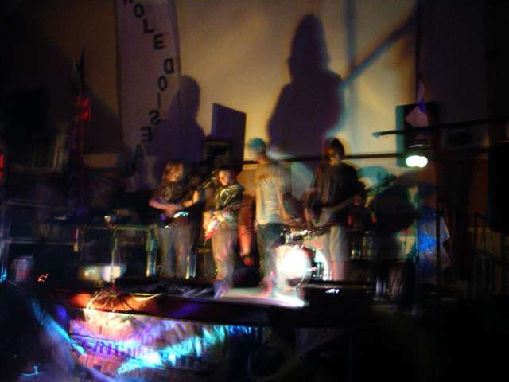
Ensuite, place à la musique. Un premier orchestre de 4 "rockers" (?). Pas mauvais mais qui ne fait pas d'effort et l'affiche bien devant un public pas trop passionné et qui continue à voler.

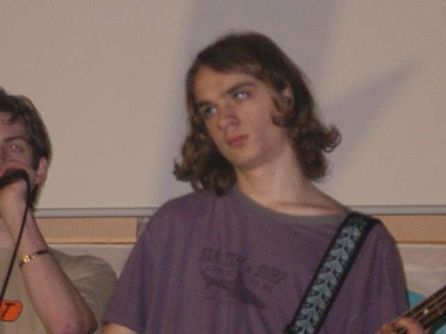
Mais la basse est très mignon(ne), et n'aurait pas déplu à Léonard de Vinci (comme modèle, bien sûr)...

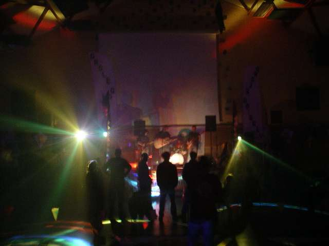
Un deuxième orchestre dans la foulée, après qu'on ait épuisé le premier ! Bizarrement équipé (guitare sèche sonorisée...), un peu plus d'enthousiasme, mais un répertoire pas emballant...

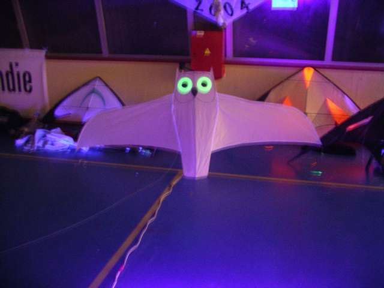
Bien sûr, il y a de l'éclairage UV ! Mon Harfang en profite pour faire les gros yeux ! Pourtant, c'est du spi jaune lambda... Même le fil des coutures est lumineux !

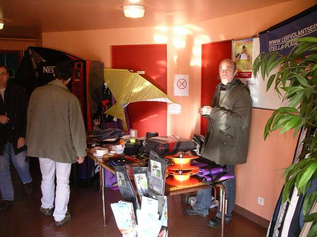
Ensuite, une nuit plutôt mouvementée et bruyante où certains n'utiliseront pas beaucoup les matelas du centre disposés un peu partout. Dimanche matin, Dominique est arrivé avec toute sa famille et sa boutique.

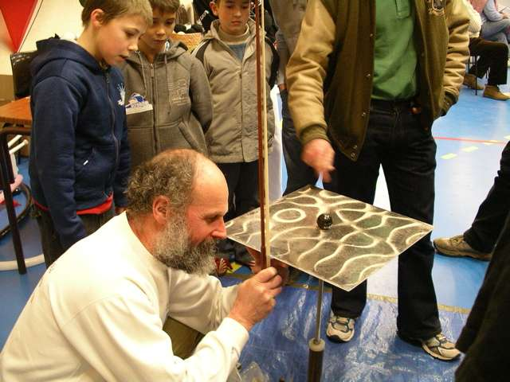
Bruno Tondellier est là aussi avec pas mal de matos dont sa plaque vibrante dont il joue toujours avec doigté...

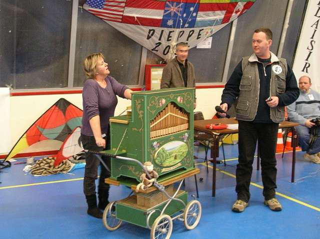
Nous aurons aussi le magnifique limonaire de l'une de ces dames du centre, et les Crazy Drivers feront une démo sur "Les Roses Blanches", encore du jamais vu !

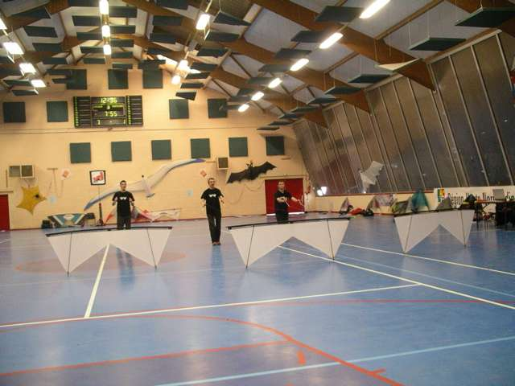
Les Crazy Drivers ont d'ailleurs été en vedette tout le week-end à travers des démos individuelles ou des vols de groupe variés comprenant des passages de main des uns aux autres et du 2-ligne au révo.

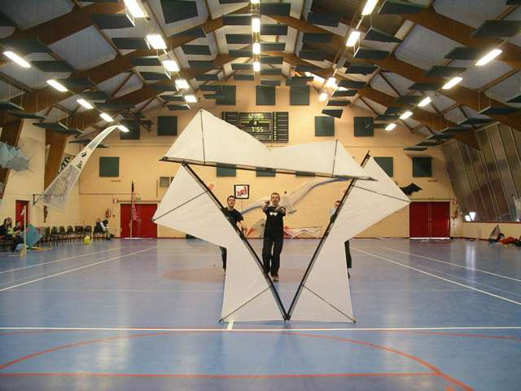
La figure de leur logo, réalisée pour de vrai pendant quelques secondes...

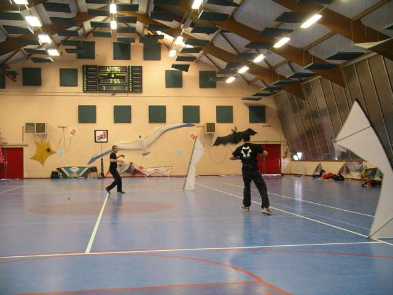
Et une figure inspirée par Fabrice : les cervolistes s'enroulent dans les lignes pendant que les cerfs-volants continuent à tourner !

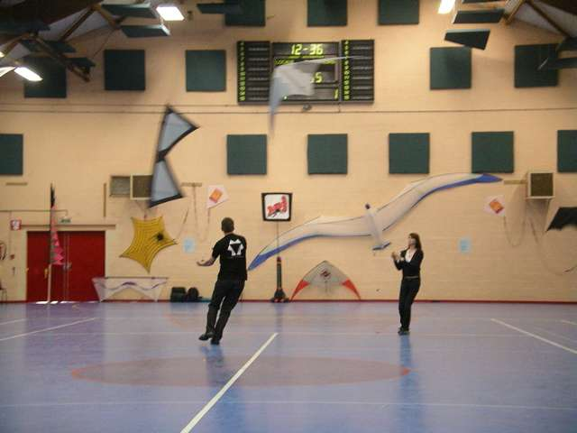
Les Allemands présentent un duo mixte, homme-femme, mais aussi 2-lignes - 4-lignes... Beau travail, de qualité.

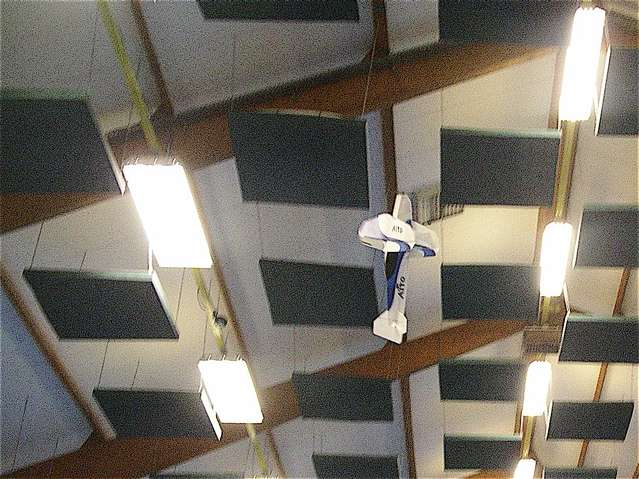
Nous avons aussi la visite des aéromodélistes qui exécutent des vols impressionnants dans un gymnase pourtant limité pour la taille des figures attendues !

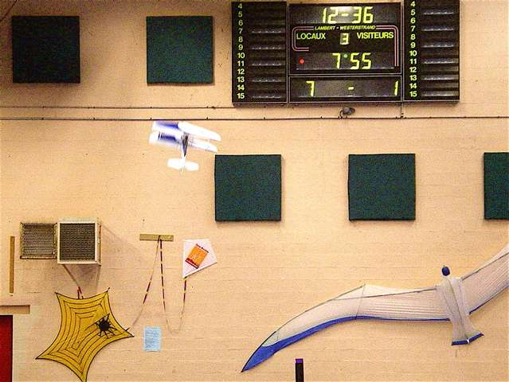
Boucles, tonneaux, vol sur le dos, même du vol stationnaire, pendu à l'hélice, et contrôlé jusqu'à toucher le sol de la queue ! Il y aura aussi un hélicoptère.

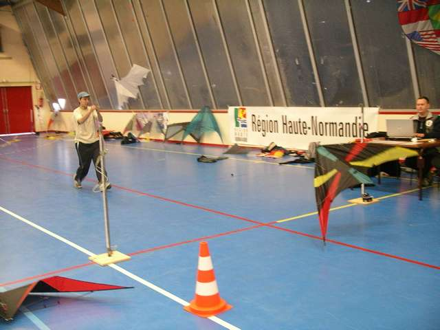
Encore une nouveauté (en France) : le Kite-Limbo. Il s'agit de faire passer le CV en fade sous une barre, sans toucher le sol, et on descend la barre petit à petit. Ici la barre est matérialisée par un rayon laser qui couine quand on le traverse (réalisé par Eric, bravo !).

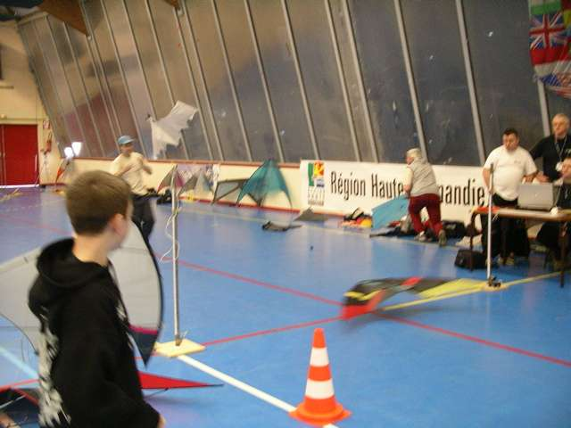
La difficulté tient dans les oscillations du fade, il ne faut pas avoir peur de partir haut et fort, puis laisser couler doucement en contrôlant... Avantage, en relâchant, le CV se met plus à plat...

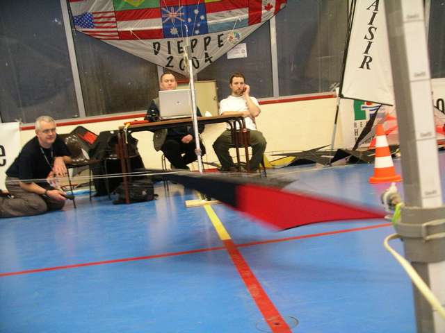
Pour le haut, pas de problème, le laser couine si on coupe. Mais il faut bien surveiller en bas si le CV ne touche pas le sol, c'est toujours très bref et tangent... Pour info, c'est l'Allemand qui a gagné !

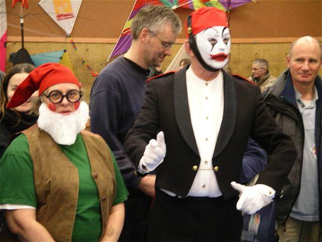
La Belgique a remis ses déguisements pour la remise des prix. Vous avez reconnu Astrid et Michel, bien sûr !

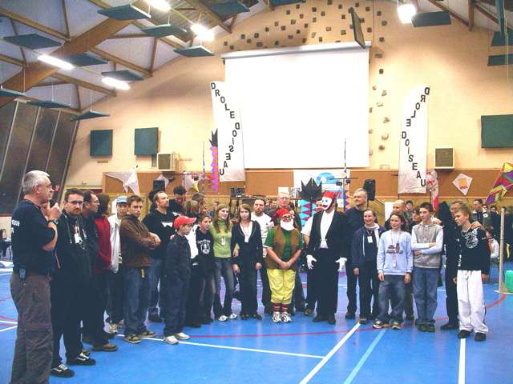
On pose pour la remise des prix, et on fera encore une photo de groupe sous le grand Rokkaku de Dieppe 2004 signé par chaque délégation sur son drapeau !

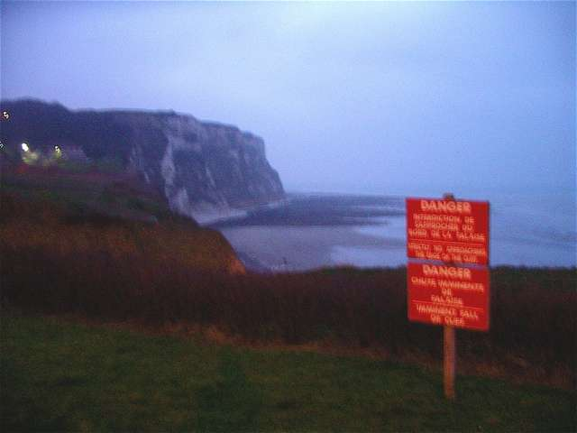
Le dimanche soir, je vais vers la mer, je ne vais pas aller tous les ans à Belleville sans la voir une fois. En fait, il faut aller à St-Michel en Campagne. Je dormirai là avec une belle vue sur les falaises, mais il ne faut pas s'approcher !

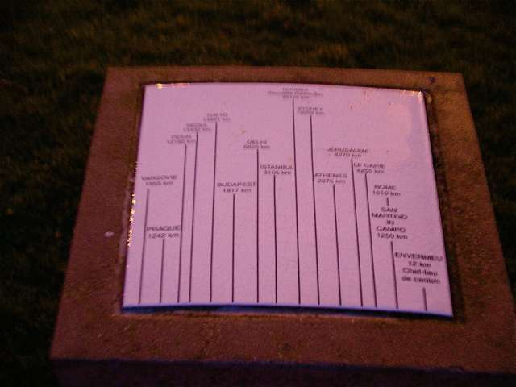
La table d'orientation nous donne la distance des principales villes, mais on ne peut pas les voir quand même...

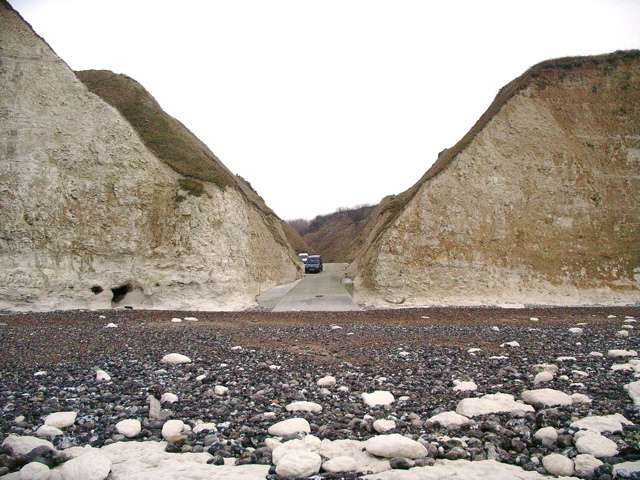
Le Lundi, donc, descente à la plage. Il faut la trouver la descente ! Et en plus elle est réservée aux "riverains" ?!

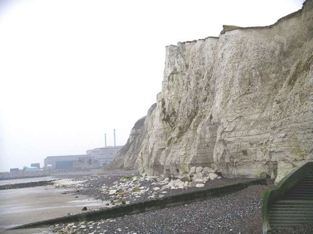
A droite, la centrale nucléaire. Mais c'est le seul endroit d'où on la voit ! (Rappel : un réacteur 3G fournira 1650 MW soit autant que 2062 éoliennes à plein régime... Il peut y avoir 4 ou 5 réacteurs par centrale. A ce jour, 954 éoliennes sont installées en France...). Sinon, la plage est très grande... à marée basse...

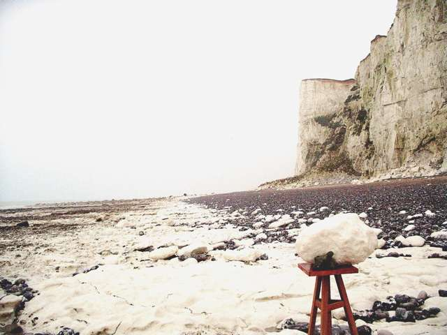
Un spécialiste de l'Art Ephémère a réalisé une "sculpture" sur son chevalet, avec des silex et du calcaire. Le temps que je fasse un petit tour, la sculpture a été démontée (ils n'ont repris que le chevalet...) !

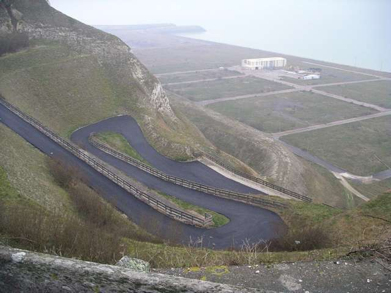
De l'autre côté de la centrale, une impressionnante route descend la falaise ! Enfin, jusqu'au milieu, le reste, ce sont des marches. Beaucoup d'argent pour économiser quelques mètres, mais ça rend la plage accessible au prix d'un effort, petit... à la descente !

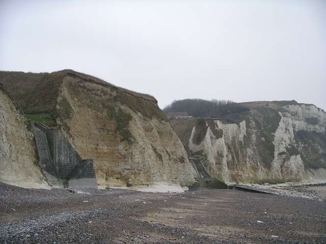
Plus loin, à Tocqueville, une plage a un accès quasi-normal, mais les fanas de marches impressionnantes peuvent quand même pratiquer leur hobby sans problèmes...
Bon, le tourisme, j'ai arrêté là après m'être enlisé dans un chemin de terre. Un camion de la municipalité m'a gentiment sorti de là (merci à eux), mais ma batterie est HS, j'ai roulé d'une traite vers chez moi sans oser couper le moteur (merci le diesel, pas d'allumage nécessaire), bien m'en a pris, à l'arrivée, ça n'a pas redémarré !
Conclusion, les indoors d'Eric Lincot sont de plus en plus variés et intéressants, pas comme les compètes monotones. Il faudra seulement veiller aux horaires qui débordent toujours les prévisions, aux temps morts et aux numéros trop longs qui découragent le public... Sinon, on se régale d'un bout à l'autre, merci Eric, Roger et toute la bande !